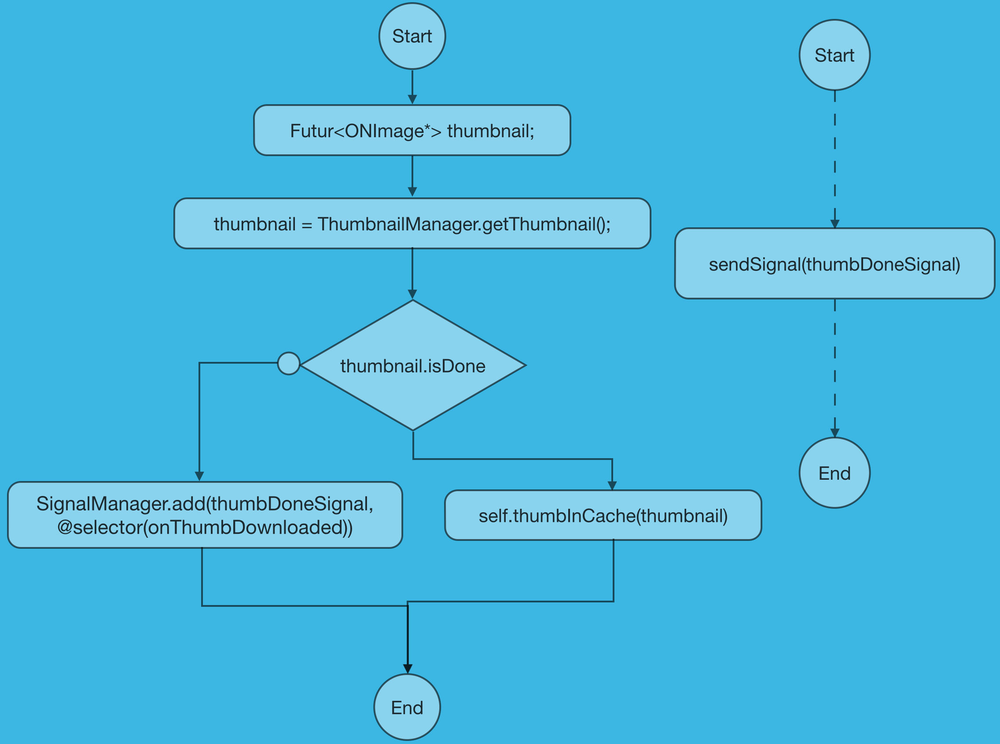
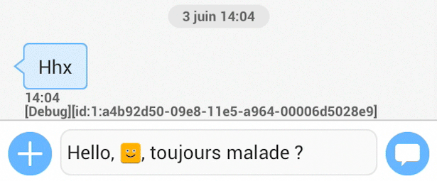
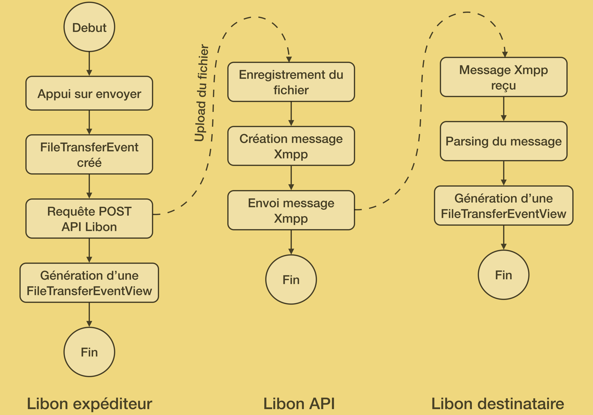

Bonjour, je vais vous presenter le stage que j'ai realisé de Fevrier à Juillet chez Orange à Pessac.
Développement d'un add-on pour Libon sous iOS


Soutenance de PFE
Filière informatique
Dans un premier temps je vais vous presenter briefement l'entreprise, puis je vous parlerais de ma mission et son contexte, avant de vous faire une demonstration de ce qui à été realisé. Par la suite je renviendrais sur deux problematiques rencontrés durant ce stage, et je terminerais par une conclusion.
- Présentation de l'entreprise
- Présentation de la mission
- Démonstration
- Retours sur deux problématiques
- Conclusion
Orange est connu en France comme premier operateur mobile et fixe, et compte presque 27 million de clients mobile
Orange en France:
- Réseau mobile N°1 en France
- 26,7 millions de clients mobile
- 9,9 millions de clients haut-debit fixe
Mais orange est egalement present en Europe et Afrique, et possède 185 millions de clients mobile.
Orange en Europe et Afrique:
- Dans 29 pays à travers le monde
- 185 millions de clients mobile
- 58 millions de clients internet et ligne fixe
Enfin Orange est present quasiment partout dans le monde via ses services à destination des entreprises.
Afin d'introduire mon stage et ma mission, nous allons partir d'un constat simple;
Afin d'introduire mon stage et ma mission, nous allons partir d'un constat simple;
Orange dans le monde:
- Dans 220 pays
- Via Orange Business Services
OLPS Soft
Equipe de 10 personnes

Device management
Com enrichie
Les communications instantannées via les OTT(Over The Top) ont explosés au point qu'aujourd'hui plus de message sont envoyés chaque jours via Whatsapp dans le monde que l'ensemble des SMS (30milliard vs 20milliard)
Explosion des communications instantanés
Et le marché est très concurentiel avec quelques gros acteurs qui se disputent les utilisateurs. Notez tout de meme que Facebook et Whatsapp se partagent presque un tier des utilisateurs mensuels et que whatsapp appartient à facebook.
avec un marché concurrentiel
3,5Mrd
C'est dans ce contexte difficile qu' Orange a introduit Libon
Libon est créée en 2012 par Orange vallée
En plus des fonctionnalités de base (messagerie et appels voIP) l'application compte se demarquer grace à quelque fonctions inedites tel qu'un messagerie visuelle et automatisée. En moyenne 3Millions d'utilisateur utilise l'application chaque mois.
En plus des fonctionnalités de base (messagerie et appels voIP) l'application compte se demarquer grace à quelque fonctions inedites tel qu'un messagerie visuelle et automatisée. En moyenne 3Millions d'utilisateur utilise l'application chaque mois.
Afin de se demarquer de la concurence un des vecteurs de travail etait l'amelioration de l'experience utilisateur pour la messagerie instantanné.
Améliorer l'expérience utilisateur
En effet les communication en ligne sont relativement deshumanisées et pas forcement naturelles, ainsi sans le contexte, il est facile de mal interpreter le sens de certains mots et donc ne pas se comprendre. De plus sans metrise du language propre à ces comunications communiquer peut etre compliqué, c'est le cas de l'acronyme LOL.
Les communications en ligne ne sont pas naturelles
Et cette situation est compreensible lorsque l'on sait que 2/3 de l'ensemble des communications se fait de manière non verbale, ça peut passer par des expressions du visage ou le language du corps par exemple.
2/3 des communications
sont non verbales
La problematique est donc de trouver un moyen de les rendre plus humaines et naturelles
Comment les rendre humaines ?


Cela peut passer par l'utilisation d'emoticons

Ou bien de stickers qui vont offir une plus grand palette d'emotions et de situations

Ou grace à des gif auquel on s'identifie relativemnt rapidement
Et c'est sur ce dernier point que la société wittiz est née
WittiZ
Wittiz est créée en 2013, et est un plateforme qui heberge un collection de courts extraits videos qui peuvent etre partagés par les utilisateurs. L'avantage etant que contrairement au gif ou les droits d'exploitation sont flous, les videos de wittiz sont exploitées legalement avec license. Leur business model repose sur le contenu sponsorisé.
Ainsi ma mission durant ce stage etait d'utiliser l'API de wittiz, d'en faire un sdk et de l'integrer à Libon afin de faciliter le partage des videos directement au sein de Libon.
Démo
Après cette petit demonstration, je maintenant vous presenter deux problématiques rencontrés durant mon stage. La premiere problematique sera l'occasion de detailler le fonctionement de la composition des messages dans libon. La seconde permettra de vous exposer comment les videos sont envoyés au destinataire.
Intégration naturelle à la composition des messages
Algorithme d'envoi des vidéos
Nous allons commencer par le fonctionnement de la composition des messages.
Intégration naturelle à la composition des messages
Lorsque l'on compose un message, avec des emoticons ou images on souhaite que ces images soient intégrés directement au sein du texte afin de pouvoir raconter en quelque sorte une histoire.

Ce qu'il faut savoir avec Libon, c'est que lorsque l'on ajoute un emoticon ou une image, en realité, ce n'est pas une image qui est inséré mais du texte. Et ce texte est parsé en temps reel afin de generer les images correspondantes.
Dans le cas de ce message, c'est donc le code : ) qui correspond à un emoticon et la balise <wittiz-addition> permet d'indiquer la presence d'une video wittiz. Avec notammen l'url vers l'image que l'on souhaite afficher et l'url de la video que l'on souhaite partager.
Ce genre de chose fonctionne bien lorsque les ressources sont disponibles localement et en nombre fini, c'est la cas pour les emoticons.
Ressources disponibles en local
Cependant dans le cas ou les ressources sont en ligne cela pose problème car on introduit la notion d'asynchronicité pour effectuer la requete web.
Ressources en ligne
Du coups il faut arriver à gerer l'asynchronicité des requetes et le parsing temps reel du texte afin de ne pas bloquer l'interface utilisateur.
?
Gérer l'asynchronicité des requêtes et le parsing en temps réel
Pour se faire on va utiliser un type introduit par les equipes qui ont developpé Libon, le type Futur. Ce dernier permet de generer un objet vide du type spécifié le temps que le veritable objet soit disponible et puisse etre remplacé. Ce mecasime repose principalement sur les signaux, et on va regarder un peu plus en detail comment cela se passe.
Futur <UIImage*>Basé sur les signaux
Dans un premier temps on declare un object "aperçu" ici thumbnail, qui sera utilisé pour stocker notre apercu, il s'agit d'un futur.
On appel ensuite la fonction getThumbnail qui va se charger de recuperer l'image via une requete asynchrone. Que l'image ait été telechargé ou non, l'execution continue et on utilise donc l'atribut isDone afin de savoir si l'image definitive à été telechargé. Oui alors l'image etait dans le cache on peut l'afficher directement.
Sinon on bind au signal thumbnailDone la fonction thumbdownloaded qui sera appelé lorsque que ce signal sera reçu. Lorsque l'image a été teléchargé, dans le callback on va executer un sendSignal afin que l'image soit remplacé dans la vue.

On appel ensuite la fonction getThumbnail qui va se charger de recuperer l'image via une requete asynchrone. Que l'image ait été telechargé ou non, l'execution continue et on utilise donc l'atribut isDone afin de savoir si l'image definitive à été telechargé. Oui alors l'image etait dans le cache on peut l'afficher directement.
Sinon on bind au signal thumbnailDone la fonction thumbdownloaded qui sera appelé lorsque que ce signal sera reçu. Lorsque l'image a été teléchargé, dans le callback on va executer un sendSignal afin que l'image soit remplacé dans la vue.
Pour l'utilisateur cela est presque invisible, cependant comme on le voit au ralenti, pendant environ une demi seconde, un cadre blanc va etre inséré dans le texte puis par la suite remplacé par l'image definitive. Ce toutefois quasiement invisible pour l'utilisateur.

On va maintenant passer à l'algorithme d'envoi des vidéos.
Algorithme d'envoi des vidéos
On l'a vu précédement, on a notre texte avec les images mais ce que l'on souhaite lors de l'envoi c'est que le texte soit dans un bulle et que dans une seconde bulle, la video soit lisible directement depuis le flux des messages
Ainsi on va utiliser un MessageEvent pour le texte et un autre Event pour la video. Avant d'aller plus loin, il faut que je vous explique ce qu'est un event dans Libon.
Ainsi on va utiliser un MessageEvent pour le texte et un autre Event pour la video. Avant d'aller plus loin, il faut que je vous explique ce qu'est un event dans Libon.
Hello, , toujours malade ?
Un event, comme son nom l'indique est un evenement
Event = Événement
MessageEvent
CallEvent
NotificationEvent
LocationEvent
FileTransferEvent
ConferenceEvent
Ils regissent tout ce qui se passe dans l'application, lors d'un appel, de la reception d'un message, une conference ou une notification.
MessageEvent
CallEvent
NotificationEvent
LocationEvent
FileTransferEvent
ConferenceEvent
Pour la suite de la presentation seuls deux event nous interesse et je vais vous decrire rapidement leur fonctionnement
MessageEvent
FileTransferEvent
Après avoir détaillé ces deux event, se pose la question de quel event choisir pour l'envoi de la video.
Hello, , toujours malade ?
→
MessageEvent
????Event
3 solutions on été envisagés, mais une seule à été retenue
3 solutions étudiées
Utiliser le FileTransferEvent
Utiliser le MessageEvent
Implementer un RemoteVideoEvent
Conclusion
- ++ Projet terminé
- ++ Consolidation de mes connaissances en dev iOS
- + Decouverte de nouveaux outils, mercurial/ JIRA
- - Synchronisation et communication difficile entre les différentes entités impliquées
- - Améliorations possibles (fonctions liées à l'authentification)
Je tiens à remercier tout l'équipe d'OLPS Soft pour m'avoir acueilli durant ces 6 mois de stage, et tout particulièrement Fabien Crapiz, mon maitre de stage pour m'avoir encadré et conseillé.
Merci de votre attention, avez vous des questions.